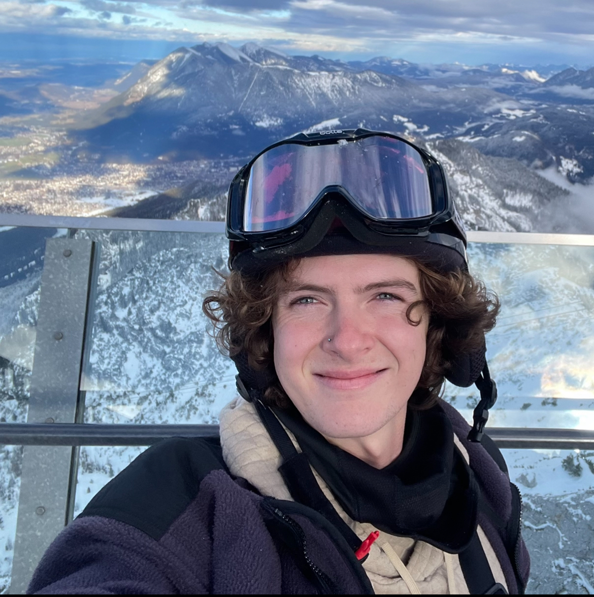

Biosynth Pedals was founded by
Brodie Sheridan and Ben Chatfield in an effort to fully realize the potential of guitar pedals. Through real-time motion tracking, what was once used merely as an effect can become a new instrument altogether, changing the paradigm of sound.
